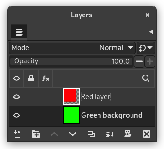
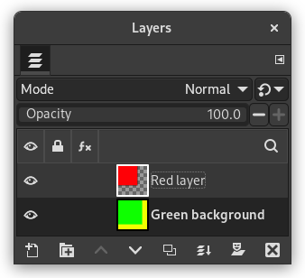

The “canvas” is the visible area of the image. By default the size of the canvas coincides with the size of the layers. The command opens the “Set Image Canvas Size” dialog that lets you enlarge or reduce the canvas size. You can, if you want, modify the size of the layers. When you enlarge the canvas, you create free space around the contents of the image. When you reduce it, the visible area is cropped, however the layers still extend beyond the canvas border.
Quando você reduz o tamanho da tela, a nova tela de pintura aparece contornada por uma fina linha na pre-visualização. O ponteiro do mouse é uma cruz de mover: você pode clicar e arrastar para posicionar o conteúdo da imagem original nesta moldura.

Tamanho da tela de pintura
- Width, Height
-
You can set the Width and the Height of the canvas. The default units are pixels but you can choose different units, e.g. percent, if you want to set the new dimensions relative to the current dimensions. If the
 Chain to the right of the Width and
Height is not broken, both Width and Height keep the same
relative size to each other. That is, if you change one of the
values, the other one also changes a corresponding amount.
If you break the Chain by clicking on it, you can set
Width and Height separately.
Chain to the right of the Width and
Height is not broken, both Width and Height keep the same
relative size to each other. That is, if you change one of the
values, the other one also changes a corresponding amount.
If you break the Chain by clicking on it, you can set
Width and Height separately.
Para qualquer unidade que você escolher, a informação sobre o tamanho em pixels, e a resolução atual da imagem sempre aparecem abaixo dos campos de Largura e Altura. Você não pode mudar a resolução no diálogo de “Ajusta tamanho da tela de imagem”; se desejar fazer isso, use o diálogo de Tamanho para impressão.
Deslocamento
Os valores de deslocamento são usados para posicionar a imagem (a imagem toda, não só a camada ativa) na tela de pintura. Você pode ver o tamanho e o conteúdo da tela de pintura na pré-visualização na janela de diálogo. Quando a nova tela de pintura for menor do que o conteúdo da imagem toda, a pré-visualização exibe os limites como uma moldura com uma borda fina.
- X, Y
-
Os campos X e Y especificam as coordenadas relativas ao canto superior esquerdo da imagem relativamente ao canto da tela de pintura. Eles serão negativos se a tela de pintura for menor que a imagem. Você pode posicionar a imagem de diferentes forma (claro, as coordenadas não podem ultrapassar as bordas da tela de pintura):
-
por clicar e arrastar a imagem
-
por digitar valores nas caixas de texto de X e Y,
-
por clicar nas setinhas. Isso incrementa ou decrementa o valor em um pixel (unidade)
-
Quando o foco estiver numa caixa de texto, você pode usar as setas Cima e Baixo do teclado para ajustar o valor em um pixel (unidade), ou PageUp e PageDown para mudar o valor por 10 pixels (unidades).
-
- Camadas
-
-
Resize layers: this drop-down list offers you several possibilities:
-
Nenhum: opção padrão. Nenhuma camada muda de tamanho, somente a tela de pintura.
-
Todas as camadas: todas as camadas são redimensionadas para o tamanho da tela de pintura.
-
Camadas do tamanho da imagem: apenas as camadas com o mesmo tamanho da imagem são redimensionadas para o tamanho da tela de pintura.
-
All visible layers: only visible layers, marked with a
 icon, in the Layers dialog, are sized to canvas size.
icon, in the Layers dialog, are sized to canvas size.
-
-
Fill with: you can fill resized layers with Foreground color, Background color, Middle Gray (CIELAB), White, Transparency (default), Pattern.
-
Resize text layers: Resizing text layers will make them uneditable.
-
- Centralizar
-
O botão Centralizar permite que você centralize a imagem na tela de pintura. Ao clicar no botão Centralizar, os valores de deslocamento são calculados automaticamente e exibidos nos campos respectivos.
![[Nota]](images/note.png)
|
Nota |
|---|---|
|
Quando você clicar no botão Mudar tamanho, o tamanho da tela de pintura será alterado, mas as informações de pixel e a resolução da imagem permanecem inalterados. If the layers of the image did not extend beyond the borders of the canvas before you changed its size, there are no layers on the part of the canvas that was added by resizing it. Therefore, this part of the canvas is transparent and displayed with a checkered pattern, and it is not immediately available for painting. You can either flatten the image, in which case you will get an image with a single layer that fits the canvas exactly, or you can use the Layers to Image Size command to resize only the active layer, without changing any other layers. You can also create a new layer and fill it with the background you want. By doing this, you create a digital “passe-partout” (a kind of glass mount with a removable back for slipping in a photograph). |
Figura 16.60. Imagem original

The background color in the Foreground/Background Colors area of the Toolbox is set to yellow; Original image with 100×100 pixels size.

We started with a green background layer 100×100 pixels. Then we added a new red layer 80×80 pixels. The active layer limits are marked with a black and yellow dotted line. The red layer does not fill the canvas completely: the unoccupied part is transparent.
Figura 16.61. Tela de pintura aumentada (camadas sem modificação)

The canvas has been enlarged to 120×120 pixels. The unoccupied part of the canvas is transparent.

The layers size remained unchanged.
Figura 16.62. Tela de pintura aumentada (todas as camadas alteradas)

The canvas has been enlarged to 120×120 pixels. The undrawn part is transparent in the red layer and yellow (background color in Toolbox) in the green background layer.

All layers have been enlarged to the canvas size.
Você pode querer adicionar mais elementos em volta de sua imagem: aumentar o tamanho da tela de pintura e adicionar uma nova camada com o tamanho da nova tela, e então pintar nessa nova camada. É a operação inversa de cortar a imagem
Você também pode usar este comando para cortar uma imagem:
Click on the
 chain next to Width and Height entries to unlink
dimensions. By modifying these dimensions and moving image against
canvas, by trial and error, you can crop the part of the image you
want. Click on the Center button and then on the Resize button.
chain next to Width and Height entries to unlink
dimensions. By modifying these dimensions and moving image against
canvas, by trial and error, you can crop the part of the image you
want. Click on the Center button and then on the Resize button.
|
|
Nota |
|---|---|
|
Claro que a Ferramenta de cortar é mais fácil de usar. |